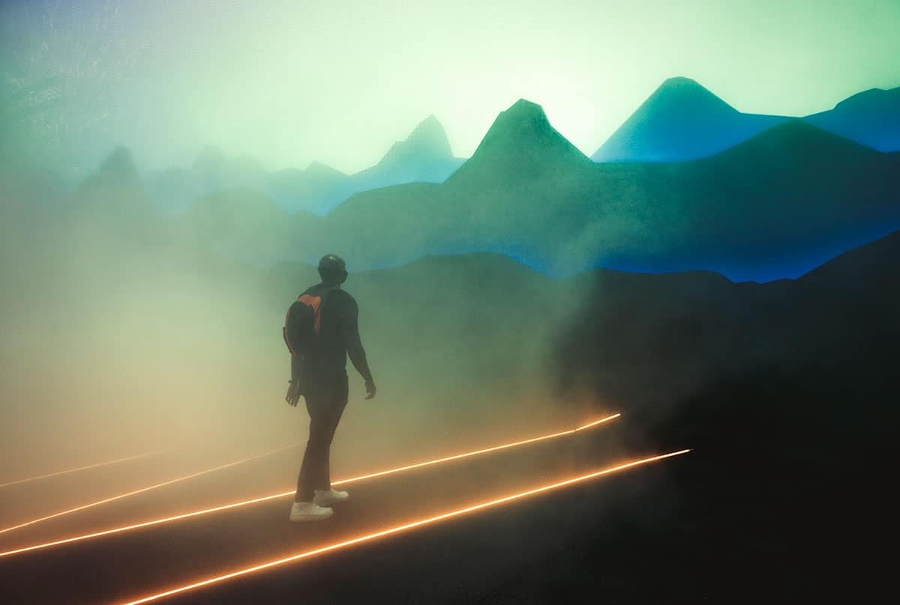

| The Best 6 Pavilions you Must Visit at Dubai Expo 2020 |
If you had the chance to visit one pavilion, we highly suggest visiting Japan. The pavilion shows
its wonderful architecture with its origami-inspired design. The architecture looks humble and unique
compared to other color-loaded pavilions. In addition, simplicity is the main key 🔑 in building the architecture of the Japan Pavilion.
|
UAE's pavilion is the biggest pavilion in Expo2020 and they made sure their pavilion
will stand out from the crowd. The design of the pavilion is inspired by the falcon wings. The architecture
of the pavilion symbolizes bold and daring spirit. Also, it resembles a falcon in flight and highlights
the history of falconry in the UAE.
|
Pakistan did a great job in Expo 2020 showcasing the beauty and architecture of the pavilion.
The pavilion was constructed using attractive colors as it showed the beauty of their country. No wonder, it is one of the most
visited pavilions. The colors used immediately catches the eye and request you to take a look inside. 👀
|
|
If you are looking for the largest in the world interactive mirror screen, you should definitely visit
the Saudi Arabia Pavilion. The screen consists of around 8000 LED floor lights that catch
the eyes 👀. We recommend everyone to visit this pavilion as it reflects wonderful colors on its gigantic mirror at night 🌃.
In fact, the Saudi Arabia Pavilion is one of the biggest pavilions as it takes up an area of the size of two football fields! 🏈
|
The United Kingdom pavilion is known for its cone-shaped as it displays random words
on the face of the building. The words are actually an AI-generated poem showcasing an intriguing presentation.
The pavilion also highlights the importance of algorithms and AI technology. The words displayed on the
building are words submitted by exhibition visitors. Moreover, an AI advanced technology is used to generate
the words on the face of the building.
|

If you are looking for the best presentation at Expo2020, you should definitely visit
the Switzerland pavilion. The pavilion is built using a large reflective mirror that reflects
the country's flag and can be seen from afar. Also, visitors are handed red umbrellas with special drawings
to take a picture with. Furthermore, visitors have to walk through the fog 🌫 once they enter the pavilion and
have a sense of the beauty of the country. ✨
|